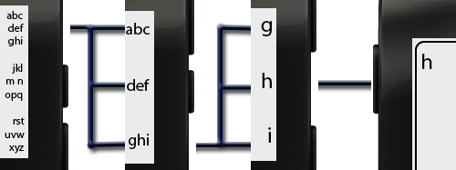
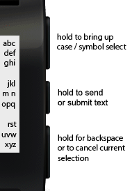
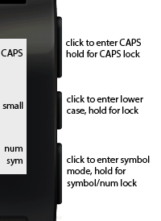
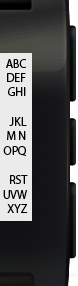
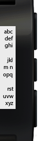
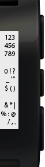

Type using your Pebble! Tertiary text presents a solution for a quick and efficient method of entering text using only the Pebble itself. By fully utilizing the three buttons and narrowing down the selection each time, it is possible to hit all twenty-six characters of the alphabet in three button strokes. It looks a little clunky at first, but in almost no time the letters become muscle memory and your speed greatly improves.
The process may be effective, but it admittedly isn't the most straightforward. Check the animation to the right to get a better idea of how it functions. Also see the diagram below:

On the start screen, all 26 letters + the space are shown in three groups of nine, one group corresponding to each button. Selecting the top button then, for example, breaks it down into the group of nine, dividing that one into three groups of three, again one group for each button. The second click will then do the same thing to the selected group, making three groups of one letter each. The third and final click will then select the letter that it corresponds to, and successfully type it!
Of course there are more than the 26 lower case letters that need to be typed, and have we not just made use of all the three available buttons? Well, there is something else we can do, despite having a limited number of buttons to work with:
    
The center button can be configured to perform any custom action, and is not a specific part of Tertiary Text. In some messaging apps (seen below) the center button hold is used to send, in Pebble Notepad it's used to save your work. You can play with the .pbw files below to get a feel for how it works.
The official demonstration of Tertiary Text is available here. The application is called Pebble Notepad, and will allow you to take notes using only your Pebble. The source for it is also included below, so you can see how to work with and use Tertiary Text. Additional updates will be pushed to keep up with new SDK releases.
Developers have started incorporating Teriary Text with awesome results!
The source is available on github and is licensed under the GPLv2 license. Feel free to contribute or adjust any small features / bugs as you feel fit! Together we can all bring the most useful, attractive, and effective text input solution to the Pebble! Perhaps with time we could even gain some official attention from the Pebble dev team. ;)
An official API may be on its way in the future, but as for now it isn't so hard to look at the code and incoorperate it.
You can contact me best at vgmoose [at] gmail.com. Thank you for checking out this project– any and all support is welcome. If you have suggestions/criticisms you can shoot me an email as well.
You can also view my other projects at vgmoose.com
.